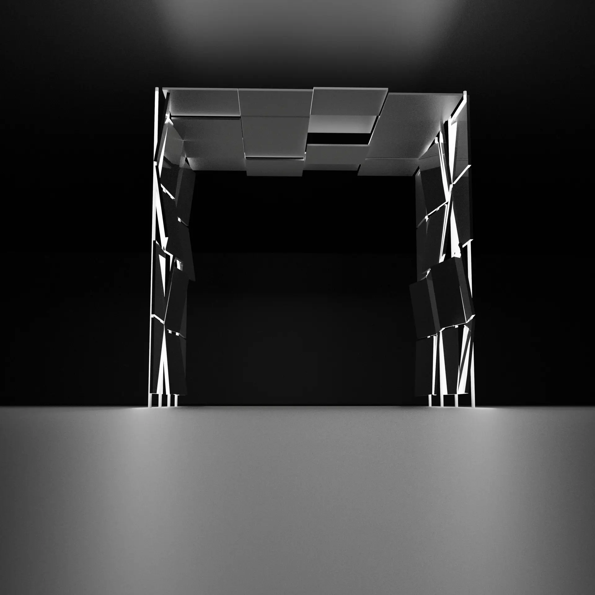

outils:
processing | blender
arduino |
definition:
Spirit-Ways
FR:
Spirit-Ways est une représentation de l’esprit en réflexion.
C'est un dispositif interactif
dont les jeux de miroir
reflète les multiples stimuli
et chemins de l’esprit
de celui qui le vit.
ENG:
Spirit-Ways is a representation
of the mind in reflection.
It's an interactive installation
whose mirrors reflect the multiple stimuli
and paths of the mind
to the person experiencing it.
